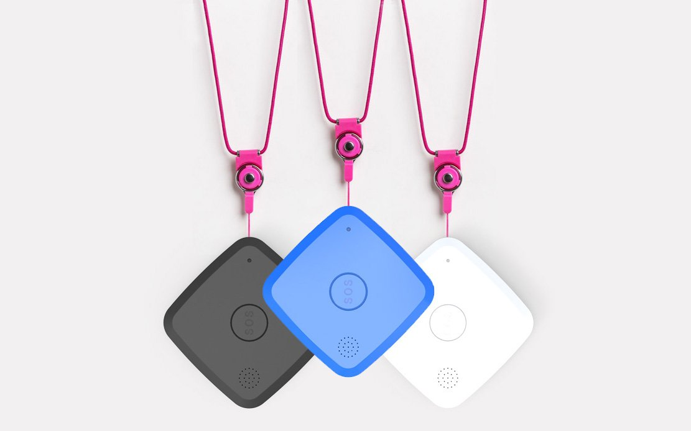

Vehicle Tracking
Vehicle Tracking provides a set of transportation design tools that include vehicle swept path prediction.

Asset Monitoring
Asset monitoring solutions can measure asset KPIs, analyze operation patterns, detect anomalies, and predict equipment failure.

Fleet Management
To ensure driver safety, fleet managers need to know exactly where individual vehicles.
Cargo Tracking
Track your shipment with with real-time information and view details including delivery, delays and transit information.

Personal Tracking
it helps you identify which campaigns are successful and which ones are not.
Tracking
A powerful universal parcel tracking system that will provide you with shipment info.